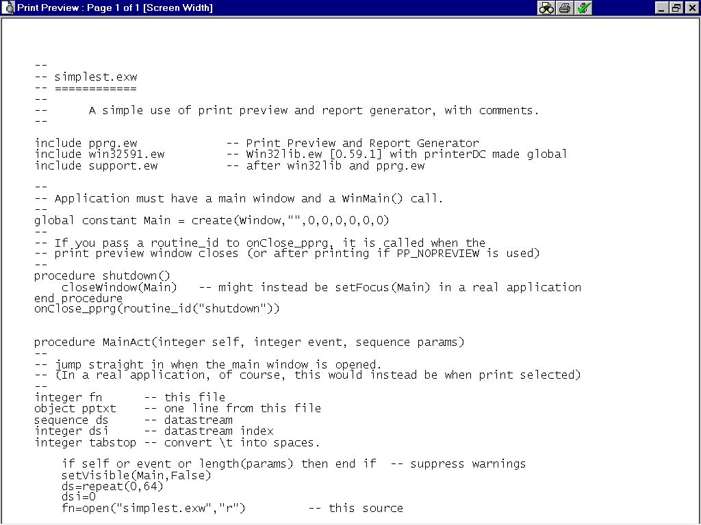
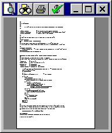
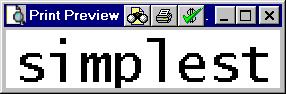

The following code prints itself
--
-- simplest.exw
-- ============
--
-- A simple use of print preview and report generator, with comments.
--
include pprg.ew -- Print Preview and Report Generator
include win32591.ew -- Win32lib.ew [0.59.1] with printerDC made global
include support.ew -- after win32lib and pprg.ew
--
-- Application must have a main window and a WinMain() call.
--
global constant Main = create(Window,"",0,0,0,0,0,0)
--
-- If you pass a routine_id to onClose_pprg, it is called when the
-- print preview window closes (or after printing if PP_NOPREVIEW is applied)
--
procedure shutdown()
closeWindow(Main) -- might instead be setFocus(Main) in a real application
end procedure
onClose_pprg(routine_id("shutdown"))
procedure MainAct(integer self, integer event, sequence params)
--
-- jump straight in when the main window is opened.
-- (In a real application, of course, this would instead be when print selected)
--
integer fn -- this file
object pptxt -- one line from this file
sequence ds -- datastream
integer dsi -- datastream index
integer tabstop -- convert \t into spaces.
if self or event or length(params) then end if -- suppress warnings
setVisible(Main,False)
ds=repeat(0,64)
dsi=0
fn=open("simplest.exw","r") -- this source
while 1 do
pptxt=gets(fn)
if atom(pptxt) then exit end if
-- assume tabstops of 4 & expand them to spaces:
while 1 do
tabstop=find('\t',pptxt)
if not tabstop then exit end if
pptxt=pptxt[1..tabstop-1]&
repeat(' ',4-remainder(tabstop+3,4))&
pptxt[tabstop+1..length(pptxt)]
end while
if pptxt[length(pptxt)]='\n' then
pptxt=pptxt[1..length(pptxt)-1]
end if
dsi+=1
if dsi=length(ds) then
ds&=repeat(0,64)
end if
ds[dsi]={"TX",pptxt}
end while
close(fn)
--
-- In addition, datadict.txt defines record TX with one field, qualifier %s.
-- The "plain" layout defines said single field, in Lucidia Console, 8 point,
-- repeating 82 times per page (and hence the line spacing).
--
generateReport("plain",ds[1..dsi],0)
end procedure
setHandler(Main,w32HActivate,routine_id("MainAct"))
WinMain( Main, Normal )
..And looks like this:

..or this:

.. or even like this:
